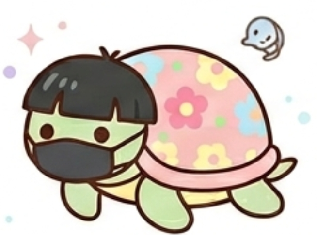

あなたのフレンドタイプは...

BSPH：どしたんはなしきこカメ
あなたは、何があっても決して揺らぐことのない、圧倒的な安定感と包容力を持った人です。自分から笑いの中心になって目立とうとしたり、派手なボケをかましたりすることはなく、常にフラットな状態で周囲を受け入れることができます。
内面に「自分のペースを絶対に崩さない」という強い芯（頑固さ）を秘めていますが、それは他人に攻撃的に向けられるものではありません。自分が余計な一言を言って場の空気を壊してしまうことを人一倍気にする繊細さがあるからこそ、その強い芯は、どんな嵐が来てもどっしりと構えて「最高の聞き手」になるための土台となっています。
他人の感情を受け止めるキャパシティが誰よりも広く、グループの会話がトゲトゲしたり脱線したりしたときに、ただそこにいるだけで場を日常の穏やかな空気へとそっと引き戻せる、癒やしの塊のようなタイプです。
友達から見たあなたは、ズバリ「どんなに場がバタバタしても、そこにいるだけでいつもの安心感に戻してくれるグループの守護神」です。
居酒屋やファミレス、いつもの集まりの席で、あなたが定位置に座って「うんうん」とみんなの話を穏やかに聞いているだけで、グループ内に「あぁ、いつもの形だな」という言葉にできない安心感が広がります。友達の間では「カメがいるだけで、その場がホームグラウンドになる」「カメがいないと、なんか落ち着かない」と言われるほど、あなたの存在自体がグループの象徴になっています。
友達が失敗して落ち込んでいるとき、あるいは人間関係のノリに少し疲れたとき、真っ先にあなたのところに「どしたんはなしきこ？」と吸い寄せられるようにやってきます。あなたが自分の話を押し通すことなく、ただ隣で優しくうなずいてくれるだけで、激しく波立っていた友達の心は一瞬で元の穏やかな温度感へと戻っていきます。
ただ、あなたがあまりにも何でも聞いてくれて、自分のことで空気を悪くするのを恐れずに感情を出さないので、友達からは「カメはマジで仏の領域ｗ」だと思われており、あなたのその底なしの聞き上手さに全員が全力で甘え、頼り切っています。
個性の強いメンバーたちがどれだけ暴れても、あなたが中心でどっしりと話を聞いてくれているため、グループの形が崩れることなく平和が保たれます。
偏見や自分の意見を一切交えずに最後まで話を聞いてくれるため、友達はあなたに対してだけは「一番情けない自分」や「誰にも言えない秘密」をさらけ出すことができます。
その場のノリや一瞬の感情の波で態度をコロコロ変えないため、友達にとって「いつでも変わらずにそこにいてくれる」という最高の精神的支柱になっています。
あなたの聖母のような聞き上手さは素晴らしいですが、時にそれが「何を言っても受け止めてくれるから、自分のネガティブを全部ぶつけてもいい人」として、ルーズな友達に搾取される原因になってしまいます。「カメなら愚痴を何時間でも聞いてくれるから、全部吐き出しちゃおう」と、友達があなたの配慮に甘えてデリカシーのない行動をとってくるケースが多々あります。
あなたは限界が来ても「自分が何か言って空気を悪くするくらいなら……」と心の中に溜め込んでしまいがちですが、カメの甲羅にも許容量の限界はあります。友達のネガティブなエネルギーやワガママをすべて無言で受け止め続けていると、ある日突然、心が完全にすり減ってしまいます。
たまには「今はちょっと疲れてるから、話はまた今度ね！」「流石にそれは寂しいよ！」と、自分の境界線をハッキリと示す勇気を持ってください。あなたがほんの少しだけ感情を外に出すことで、友達は「カメの優しさに甘えすぎていた」とハッと気づき、あなたのその貴重な傾聴力をより一層大切に扱ってくれるようになります。